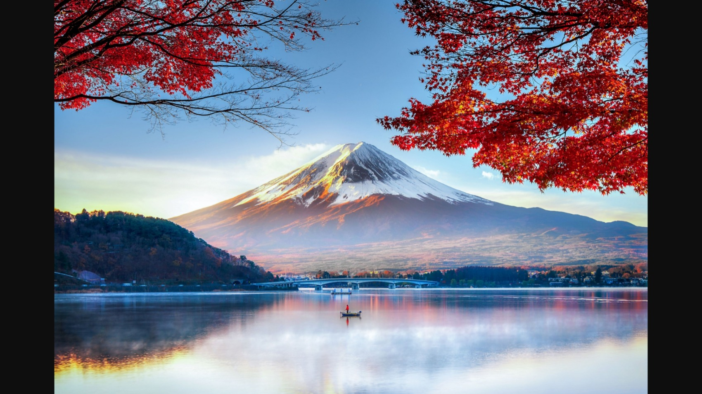

Actingactors
Scene #1
scene #2
Scene #3
Ideas
We should use Japanese characters to spell land of the rising sun in the background.
sources:
Blessed Justo takayama poem
st.Paul Miki last words, and letter
Poems, and letters
st: Paul Miki's letter:“Having arrived at this moment of my existence, I believe that no one of you thinks I want to hide the truth.
That is why I declare to you that there is no other way of salvation than the one followed by Christians.
Since this way teaches me to forgive my enemies and all who have offended me, I willingly forgive the king and all those who have desired my death.
And I pray that they will obtain the desire of Christian baptism… I obey Christ. After Christ’s example I forgive my persecutors.
I do not hate them. I ask God to have pity on all, and I hope my blood will fall on my fellow men as a fruitful rain.” Blessed Justo Tackayama's letter to the emperor:
I have always been loyal to you with reverence – never insulted you, to my best recollection.
It is my responsibility, however, that my servants both in Settsu and Akashi had become Christians.
I will never trade my faith in Christ and forfeit the salvation of my soul even for the whole world to be in my disposition.
Therefore, I hereby submit myself, my body and my province, to your disposition.
Cristianity in Japan
Background Art
www.amazing pictures of mount fuji.com
.jpg)
.jpg)